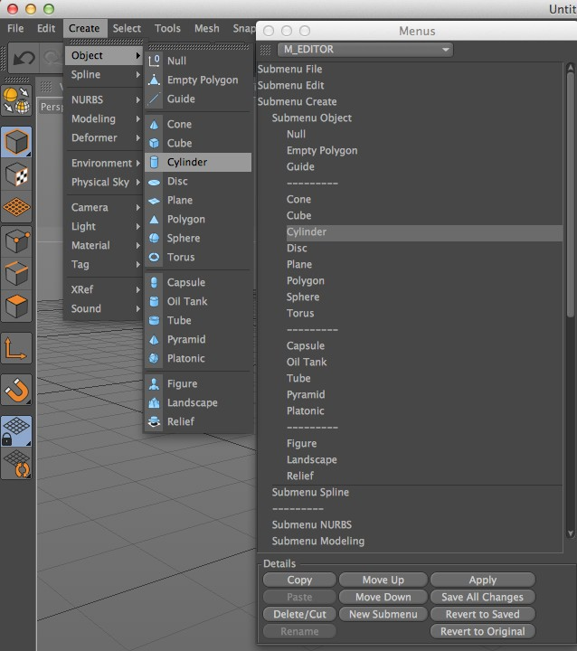
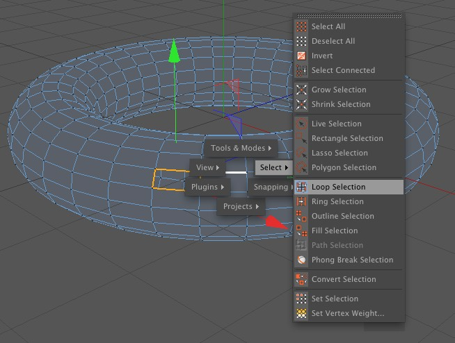

Function available in CINEMA 4D Prime, Visualize, Broadcast, Studio & BodyPaint 3D
自定义菜单管理器
使用菜单管理器可以编辑子菜单了下拉列表，你还可以添加新的子菜单。菜单管理器和命令管理器让你可以按照自己喜欢的工作方式自由地配置 CINEMA 4D 的界面。

菜单
CINEMA 4D 有多个菜单，使用管理器顶部的下拉列表可以选择要显示的菜单。子菜单带有“子菜单”的前缀，双击它可以打开或关闭一个子菜单。
插入命令
命令管理器列出了 CINEMA 4D 的命令，从命令管理器中可以把命令拖放到菜单管理器中，这时鼠标会变成插入模式的形状。

使用这些命令可以复制、粘贴、剪切或删除命令，标准子菜单项目不能删除。
上移、下移命令可以把选择的菜单向上或向下移动一位，新建子菜单则会在选择的菜单项上方插入一个新子菜单，你可以添加命令或者更多子菜单。
这个命令可以重命名子菜单。
“应用”会应用更改；“保存全部更改”会保存全部菜单更改；“恢复”会放弃所有设置更恢复到最近保存的菜单结构；“恢复到最初”会恢复到标准菜单设置，它是一直存储在程序中的（出厂设置）。更改到一个新菜单会应用所有更改到当前的菜单。
提示：
要恢复菜单到出厂设置，可以删除用户文件夹中的 Prefs 文件夹。注意！这会也会删除所有你设置的键盘快捷键和菜单。
要恢复菜单到出厂设置，可以删除用户文件夹中的 Prefs 文件夹。注意！这会也会删除所有你设置的键盘快捷键和菜单。
快速选择

用快速选择功能可以快速选择菜单命令。默认情况下你可按 v 键弹出快速选择菜单，你可以在其中选择要执行的命令。执行下列之一的操作：
- 按住 v 键，将鼠标移动到想要选择的菜单项上然后松开按键。
- 按下 v 键，然后点击想要选择的菜单项。
配置快速选择

你可以自由配置快速选择组并选择其包含的命令：选择